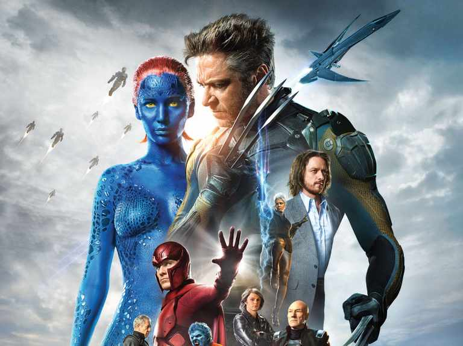

The precursor to Marvel Comics was founded in 1939 by pulp magazine publisher Martin Goodman. In order to capitalize on the growing popularity of comic books—especially those starring superheroes—Goodman created Timely Comics. Timely’s first comic book was Marvel Comics no. 1 (cover dated October 1939), which featured several superhero characters, most notably the Human Torch and the Sub-Mariner. Timely Comics introduced many superhero characters during comics’ “Golden Age” in the 1940s, most importantly Captain America, who first appeared in Captain America Comics no. 1 (March 1941). Timely characters were often portrayed as fighting against the Nazis and the Japanese even before the United States entered World War II. As the 1940s came to a close, superheroes fell out of vogue with comic book readers, and Timely canceled the last of its books in this genre in 1950.
In 1951 Goodman formed his own distribution company, and Timely Comics became Atlas Magazines. Though there was a brief experiment in bringing back superheroes such as Captain America in 1953, Atlas`s output was mostly in other genres such as humour, westerns, horror, war, and science fiction.
In 1956 rival company DC Comics ushered in the so-called Silver Age of comics by reintroducing superhero titles with significant commercial success. In the early 1960s Atlas changed its name to Marvel Comics. For several decades Marvel and DC were the top companies in the industry. Throughout the 1980s and ’90s Marvel changed hands numerous times, becoming a publicly held company in 1991. Questionable management decisions and a general slump in sales in the comic book industry drove Marvel Comics into bankruptcy in 1996. The company emerged from bankruptcy in 1998 and began to diversify its output, launching imprints aimed at a variety of demographics and expanding its cinematic offerings under the Marvel Studios banner. In 2007 Marvel began publishing digital comics. In 2009 the Walt Disney Company purchased the parent company of Marvel Comics.
The Marvel Universe
Stan Lee
The shared storytelling palette known as the Marvel universe was unveiled in 1961, when Goodman responded to the growing interest in superhero books by commissioning writer Stan Lee and artist Jack Kirby to create the Fantastic Four. With the release of Fantastic Four no. 1 (November 1961), readers were introduced to a superheroic setting that was, nevertheless, rooted in the real world. Lee and Kirby attempted to make their comic book characters more original by allowing them to interact with each other in a realistic fashion, including heroes often fighting or arguing with each other. This trend continued with a flood of other superhero characters introduced by Marvel Comics during the early 1960s, including Spider-Man, the Incredible Hulk, and the X-Men. Lee wrote the majority of Marvel’s books during that time, and Jack Kirby and Steve Ditko were the most important and influential artists.
This more realistic approach to characterizations built up Marvel’s reputation and began to attract university-age readers. Stories also began to deal with social issues such as pollution, race relations, and drug abuse. A Spider-Man story arc from 1971 dealing with drug abuse had to be published without the approval of the Comic Code Authority—the self-regulatory body that had policed comic content since 1954—despite the fact that it was portraying drug use in a negative light. This caused the Comic Code Authority to revise its policy in such matters.

X-Men
The late 1960s and early 1970s saw a new generation of creative talent emerge at Marvel. In 1967 Jim Steranko began to write and draw stories featuring secret agent Nick Fury in the anthology book Strange Tales. Steranko was influenced in his work by James Bond films and the psychedelic and Op art movements, and the resulting stories melded groundbreaking visuals with equally innovative storytelling techniques. Writer Chris Claremont and artist John Byrne began a long collaboration on The Uncanny X-Men in 1975. The pair revitalized the flagging series with characters such as Wolverine and complex story arcs that soon made the X-Men franchise one of Marvel’s best sellers.
In 1985 Mark Gruenwald started a critically acclaimed 10-year run as the writer of Captain America. That same year he also began the miniseries Squadron Supreme (1985–86), a deconstructionist take on superheroes that preceded Alan Moore’s graphic novel Watchmen, published by DC Comics. The 1980s also saw Frank Miller’s stint on Daredevil, which took that book in a darker and grittier direction, reviving sagging sales and making it one of Marvel’s best sellers. In 1988 Todd MacFarlane began a popular run as artist on The Amazing Spider-Man. Four years later MacFarlane and a number of other popular artists, including Jim Lee, Erik Larsen, and Rob Liefeld, left Marvel to found rival Image Comics, a company that allowed creators to retain the copyrights of their characters.
Avengers
During the 1990s and early 2000s a new wave of writers, including Brian Michael Bendis (Daredevil, The Avengers), Jonathan Hickman (Fantastic Four), and Ed Brubaker (Captain America), became well known for their mature and sometimes controversial takes on Marvel’s characters. The 2010s saw the emergence of another new wave of talent, with writer Matt Fraction and artist David Aja turning in a visually arresting run on Hawkeye, longtime Spider-Man writer Dan Slott teaming with artist Mike Allred for a bold take on a classic character in Silver Surfer, and writer G. Willow Wilson and artist Adrian Alphona breaking new ground with their critically acclaimed Ms. Marvel. In the 21st century Marvel’s profits were increasingly derived from toys, video games, and other merchandise featuring their most popular characters and from the production of a string of commercially successful movies. Those films differed from prior efforts to translate comics to the big screen in that they were set in a single shared world.
That ambitious plan generated huge dividends with The Avengers (2012), a film that featured Iron Man, Thor, and Captain America—three heroes that had scored individual blockbuster successes—and grossed more than $1.5 billion worldwide. The Marvel Cinematic Universe, as it came to be known, grew into one of the most lucrative franchises in film history. Its success spawned a wave of television programs, beginning with Age on ABC and continuing with Daredevil, Jessica Jones, and Luke Cage , a string of critically lauded series that appeared on Netflix. In 2015 an agreement between Disney and Sony brought Spider-Man (who had previously appeared only in Sony-produced films) into the shared universe; the character would subsequently be available for use by both studios. Marvel Studios, the company’s film and television division, continued to set records with its flagship Avengers, but it also packed theatres with relatively unknown heroes such as the Guardians of the Galaxy (2014), Ant-Man (2015), and Doctor Strange (2016). In addition, Black Panther (2018) became the first Marvel movie to win an Academy Award; it received Oscars for costume design, original score, and production design. By 2020 more than 20 films had been released under the banner of the Marvel Cinematic Universe, global box office receipts had topped $22 billion.